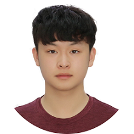

基本情况
| 电话：18311381788 |
邮箱：18311381788@163.com |
申请实习岗位
教育经历
- 2015年9月-2021年7月，北京师范大学附属实验中学，GPA 4.0
- 2021年9月至今，加州大学圣地亚哥分校（UCSD），数学-计算机科学专业，大一GPA3.95
专业特长
- 初一接触计算机算法，初二起参加信息奥林匹克竞赛，已系统学习算法与数据结构、图论基础、数论基础、组合数学、现代人工智能等大学本科或研究生阶段知识
- 熟练使用C++、C、Python、Java等编程语言
- Codeforces在线编程比赛网站等级分2537，特级大师（Grandmaster）
- UCSD算法竞赛（ICPC）队成员（唯一的本科生），2022年校队选拔赛中全校第一
主要竞赛奖项
- 丘成桐中学科学奖全球铜奖（数学，总排名第3）（2020年12月）。获奖论文为《斐波那契字符串前缀和的O(1)算法及证明》，文中独立提出并证明斐波那契字符串前缀和的新算法，并刊发于《数学学习与研究》（2020.12刊，2020年6月）
- 美国计算机奥林匹克竞赛（USACO）公开赛铂金组全球第8（国际，2020年3月）
- 亚洲与太平洋地区信息学奥林匹克竞赛（APIO）银牌（国际，2020年8月）
- 中国信息学奥林匹克竞赛决赛（NOI）铜牌（中国，2020年8月）
- 美国高中生数学建模竞赛（HiMCM）H奖（国际，2020年11月）
设计AI项目
- 德州扑克翻前AI，具备训练、场景查询、计算Equity等功能（独立完成，2022年4月）
- 围棋AI，达到野狐9段水平（独立完成，2020年7月）
- 炉石传说竞技场选卡AI，平均胜场达到7.3场（团队核心成员，2019年6月）
品格及爱好
- 纯真善良，有钻研精神和批判性思维，善于独立思考和发现问题，做事坚毅、持久、专注
- 爱好各类棋牌游戏，尤其擅长围棋，业余5段，弈城9段，野狐9段，2021年中国围棋职业定段赛获得7胜，2022年2月全美等级分第5